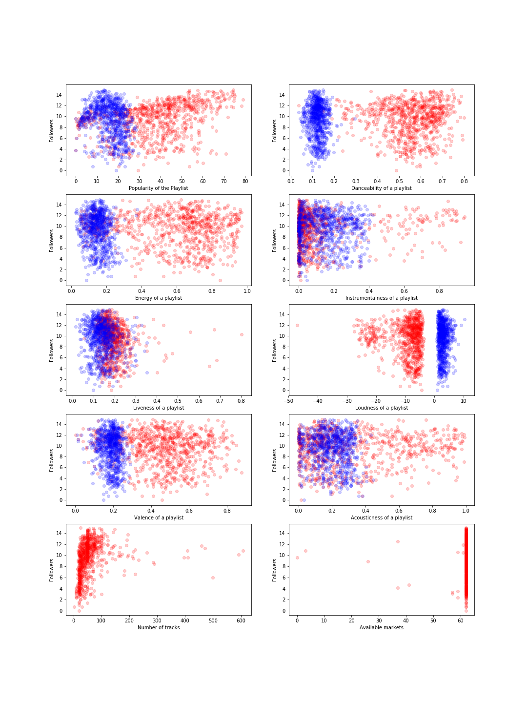
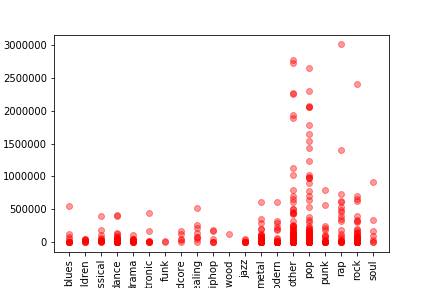
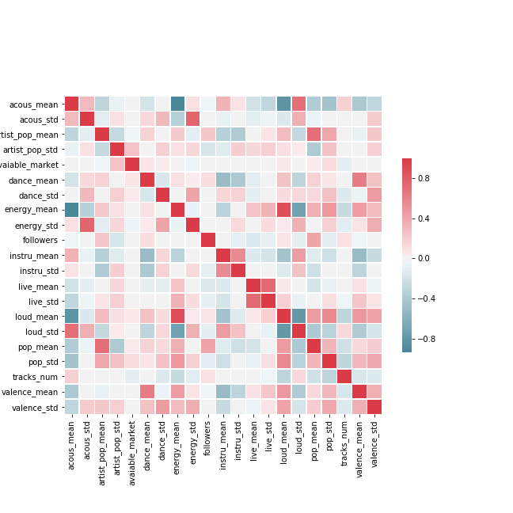
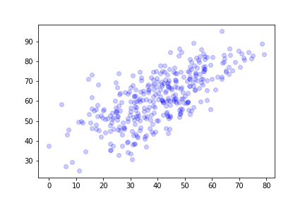

Identify the attributes that contribute most to the hottest playlist in Spotify. Based on these attributes,we use two approaches for our modelling - prediction(predict if a playlist is hot) and classification (what playlists are the hottest)
In total, we are getting 18 features for now.
| Key | Value Type | Value Description | Feature Engineering |
|---|---|---|---|
| followers | int | Number of Followers: from 0 to inf, indicate how many people follow this playlist. | Probably need to do some log transformation later. |
| name | string | Name of the playlist. | |
| acous_mean acous_std |
float float |
Acousticness: A confidence measure from 0.0 to 1.0 of whether the track is acoustic. 1.0 represents high confidence the track is acoustic. | Get the mean/standard deviation of acousticness for all track in the playlist. |
| artist_pop_mean artist_pop_std |
float float |
Popularity (Artist): How popular this artist is and measured from 0.0 to 100.0. 100.0 represents most popular. | Get the mean/standard deviation of popularity for all artists in each track inside one playlist. |
| avaiable_market | int | The number of available markets: how many possible markets can download/listen to this playlist. | Convert lists of available markets to numbers, and get the maximum number of market for all tracks in the playlist. |
| dance_mean dance_std |
float float |
Danceability describes how suitable a track is for dancing based on a combination of musical elements including tempo, rhythm stability, beat strength, and overall regularity. A value of 0.0 is least danceable and 1.0 is most danceable. | Get the mean/standard deviation of danceability for all track inside one playlist. |
| energy_mean energy_std |
float float |
Energy is a measure from 0.0 to 1.0 and represents a perceptual measure of intensity and activity. Typically, energetic tracks feel fast, loud, and noisy. For example, death metal has high energy, while a Bach prelude scores low on the scale. Perceptual features contributing to this attribute include dynamic range, perceived loudness, timbre, onset rate, and general entropy. | Get the mean/standard deviation of energy for all track inside one playlist. |
| instru_mean instru_std |
float float |
Instrumentalness: Predicts whether a track contains no vocals. "Ooh" and "aah" sounds are treated as instrumental in this context. Rap or spoken word tracks are clearly "vocal". The closer the instrumentalness value is to 1.0, the greater likelihood the track contains no vocal content. Values above 0.5 are intended to represent instrumental tracks, but confidence is higher as the value approaches 1.0. | Get the mean/standard deviation of instrumentalness for all track inside one playlist. |
| live_mean live_std |
float float |
Liveness: Detects the presence of an audience in the recording. Higher liveness values represent an increased probability that the track was performed live. A value above 0.8 provides strong likelihood that the track is live. | Get the mean/standard deviation of liveness for all track inside one playlist. |
| loud_mean loud_std |
float float |
Loudness: The overall loudness of a track in decibels (dB). Loudness values are averaged across the entire track and are useful for comparing relative loudness of tracks. Loudness is the quality of a sound that is the primary psychological correlate of physical strength (amplitude). Values typical range between -60 and 0 db. | Get the mean/standard deviation of loudness for all track inside one playlist. |
| pop_mean pop_std |
float float |
Popularity (track): How popular this artist is and measured from 0.0 to 100.0. 100.0 represents most popular. | Get the mean/standard deviation of popularity for all track inside one playlist. Need to check the collinearity with pop of artist. |
| tracks_num | int | How many tracks are inside this playlist. From 0 to inf. | |
| valence_mean valence_std |
float float |
Valence: A measure from 0.0 to 1.0 describing the musical positiveness conveyed by a track. Tracks with high valence sound more positive (e.g. happy, cheerful, euphoric), while tracks with low valence sound more negative (e.g. sad, depressed, angry). | Get the mean/standard deviation of valence for all track inside one playlist. |
| genre_narrow | string | Genre: From over 130 genres, narrow down to 20 general genres. For example: "pop", "rap", "classical", etc. | Later might get dummy variables for this column. |
The plots below show how the features selected for modelling are affecting our response variable. We have plotted these features with the log value of the number of followers.
The plot below shows how different generes affect the followers of a playlist.
The above correlation matrix shows that the mostly the features are very not co-linear. We hve dropped the features that seemed co-linear.
Song popularity and artist popularity were highly co-linear as seen in the plot above. Hence, we have used just one of those in our prediction model.
 Link to Report DetailsWe just start with the simplest regression model, predicting the number of followers by the mean popularity of all tracks in the playlist. It seems to have low score, and we could take it as the baseline of our target model.
Then we try to do more complicated regression model, predicting the number of followers by all features we got for playlists (include audio features, genre, num of tracks, etc.) The result is better but not ideal.
The ridge regression gives an estimate which minimise the sum of square error as well penalizes large estimates. That is why, to improve our score on the dataset, we moved over to Ridge regression. It is easy to implement and comes up with relatively good results.
The lasso regression does both parameter penalizing and variable selection. It gives better results than simple linear regression. In our case, the results are similar to Ridge's.
We try this model with different degrees from 1 to 10. It seems degree 2 has the best results. However, sometimes the score is bad. So we don't recommend this model.
When we look closer into the linear regression result, we find that the errors are not normally distributed, which prompt us to use the GLM.
We have previously worked with regression models where the response variable is quantitative and normally distributed. But the data we have here for spotify playlists, doesn't have normally distributed response variable. The response variable 'followers' is discrete and the error terms do not follow normal distribution hence they can be modeled with generalized linear models. The data here follows a Poisson distribution because the response variable can be counted as whole number, occurences are independent, i.e. one playlist doesnt diminish or increase the chance of other playlist having more number of followers. This model gives us relatively good results.
We divide the class into 8.
(Class 1: 10 followers or less; Class 2: 100 followers or less; Class 3: 1000 followers; Class 4: 10000 followers ....)
For the first classification model, we use the bag of words to do random forest. The dictionary include the 500 most frequent words. and we created a vector for each playlist. We assume that the name of the playlist would affect the number of followers. It turns out there indeed is some relationship between the two.
The second classification model is a logistic regression model that uses all the quantitative feature from spotipy API. We are trying to predict the level of hotness of the playlist. It works just fine, but it is more complicated than previous models.
The third classification model is a combination of above two models. The weight of these two models is assigned using logistic regression This model gives us the best results.
The fourth classification model is neural network with dropout layers. The input is all the features used in the first two models combined. This model is time consuming.
| Approach | Model | Score |
|---|---|---|
| Regression | Linear Regression w/ one feature | 0.23 |
| Linear Regression w/ all features | 0.36 | |
| Ridge Regression | 0.45 | |
| LASSO Regression | 0.46 | |
| Polynomial Regression w/ degree 2 | 0.40 | |
| Generalized Linear Model | 0.44 | |
| Classification | Random Forest w/ Bag of words | 0.44 |
| Multi-logistic Regression | 0.42 | |
| Meta Model:Random Forest and multi-logistic | 0.47 | |
| Neural Network | 0.37 |
Powered by w3.css